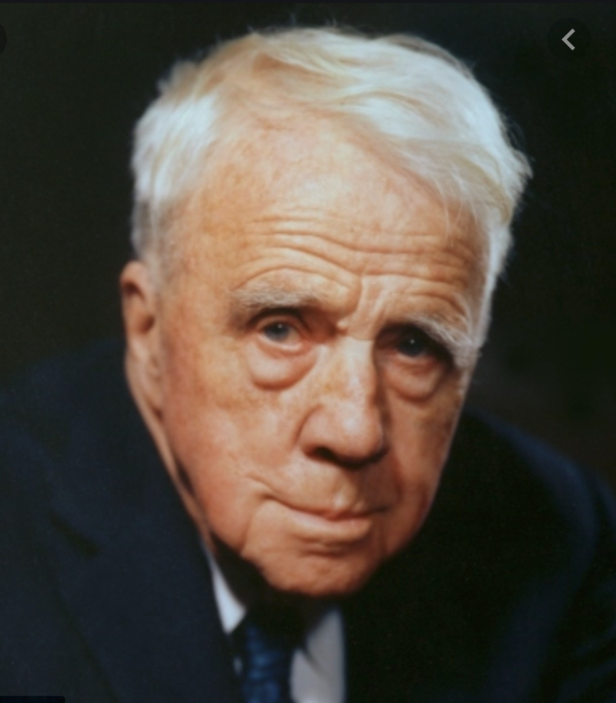

Robert Frost is an American poet. He has created many famous poems that we know today, such as Fire and Ice, Mending Wall, The Road Not Taken, and many more. He was born in San Francisco, California in 1874. He had a wife by the name of Elinor White, whom which he had six children with. Frost became a very successful poet. On January 29, 1963, he died from problems caused after he had prosate surgery, but his legacy continues to live on.
To the Index 